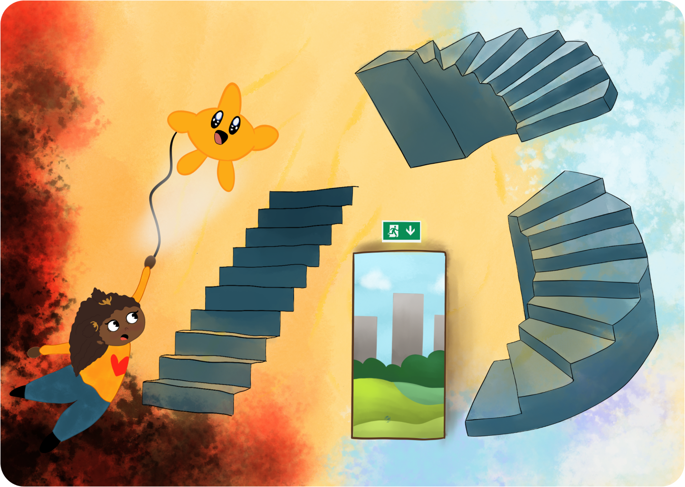
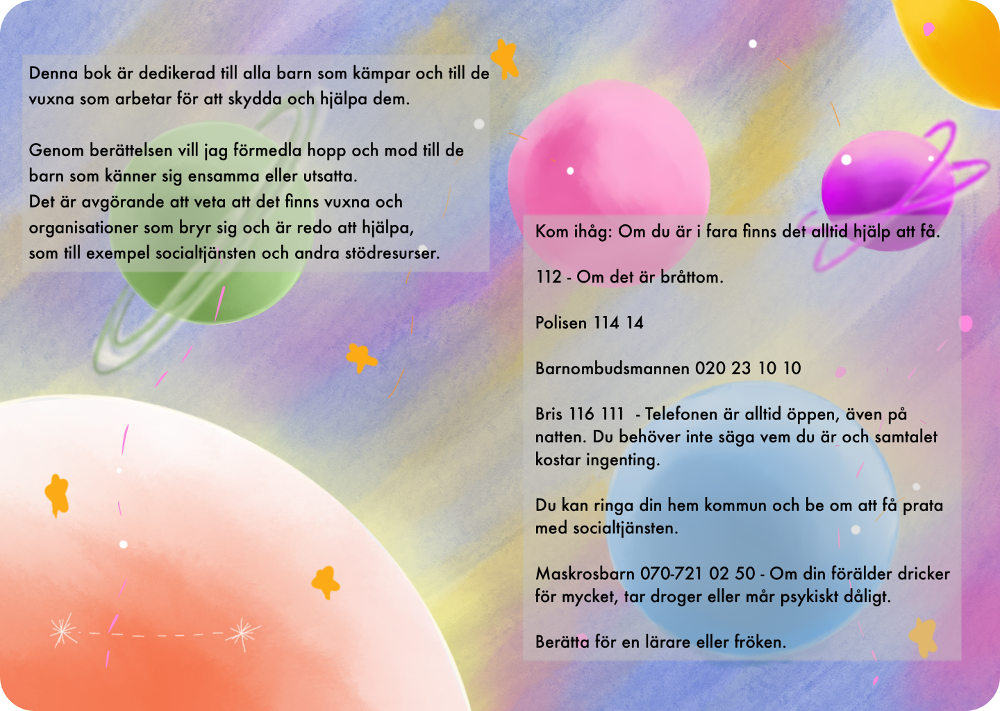
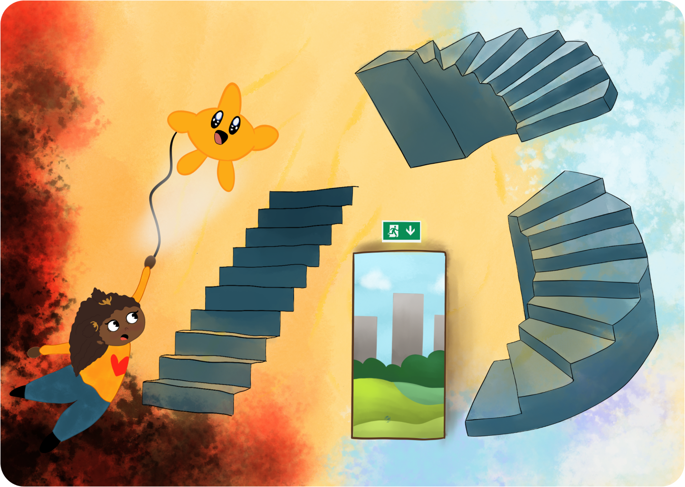
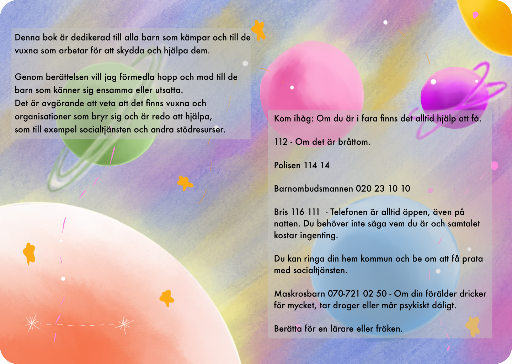

Maya and the dream star

 



Maya and the dream star
This book is dedicated to all the children who are struggling, and to the adults who work to protect and help them.
Through the story, I want to convey hope and courage to children who feel lonely or vulnerable. It’s crucial to know that there are adults and organizations who care and are ready to help, such as social services and other support resources.
Remember: If you're in danger, help is available.
- 112 - For emergencies
- Police - 114 14
- Children's Ombudsman - 020 23 10 10
- Bris (Children's Rights in Society) - 116 111 - The phone line is always open, even at night. You don’t need to share your name, and the call is free.
- You can contact your local municipality and ask to speak to the social services.
- Maskrosbarn (Dandelion Children) - 070-721 02 50 - If your parent drinks a lot, uses drugs, or struggles with mental health issues.
- Talk to a teacher or trusted adult at school.
Key Features:
- Supportive Resources Highlighted
- Engaging Visuals and Characters
- Empowering Storytelling
Technologies Used:
Adobe InDesign, Procreate